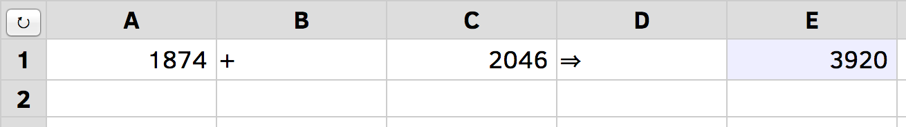
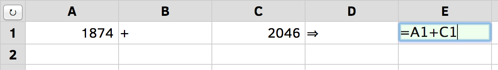
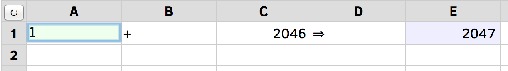
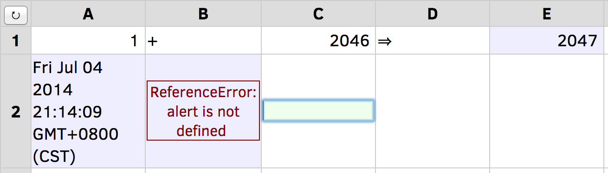
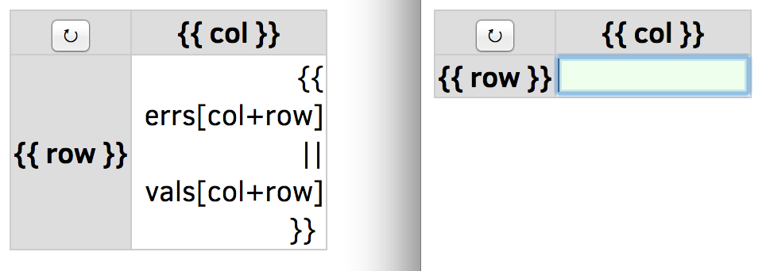
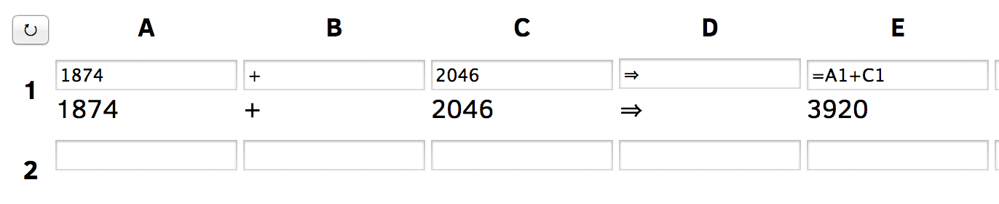
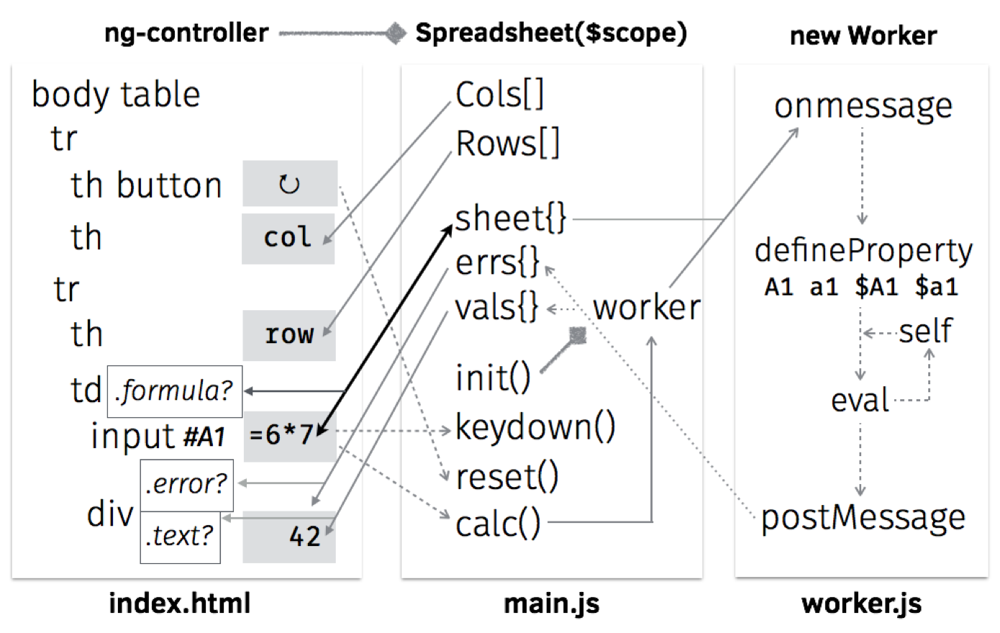
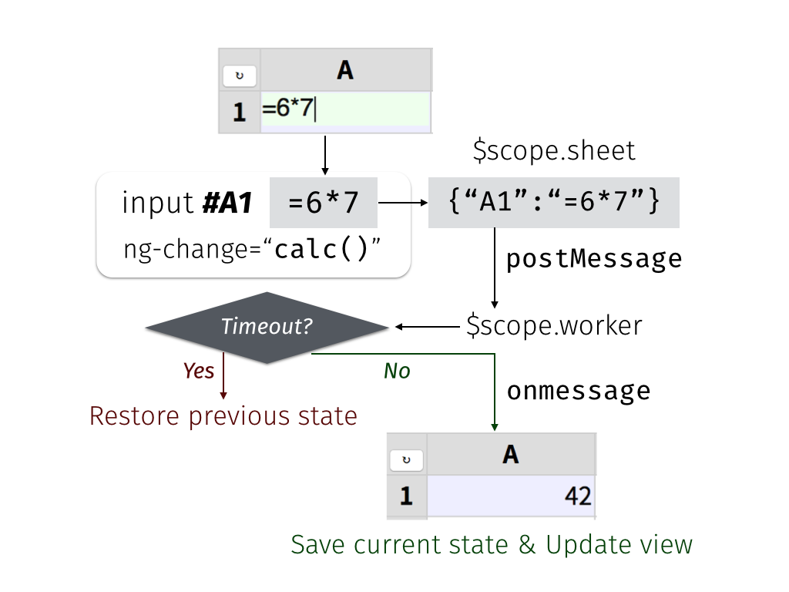

Web Spreadsheet
by Audrey Tang
A self-educated programmer and translator, Audrey works with Apple as an independent contractor on cloud service localization and natural language technologies. Audrey has previously designed and led the first working Perl 6 implementation, and served in computer language design committees for Haskell, Perl 5, and Perl 6. Currently Audrey is a full-time g0v contributor and leads Taiwan’s first e-Rulemaking project.
This chapter introduces a web spreadsheet written in 99 lines of the three languages natively supported by web browsers: HTML, JavaScript, and CSS.
The ES5 version of this project is available as a jsFiddle.
(This chapter is also available in Traditional Chinese).
Introduction
When Tim Berners-Lee invented the web in 1990, web pages were written in HTML by marking up text with angle-bracketed tags, assigning a logical structure to the content. Text marked up within <a>…</a> became hyperlinks that would refer the user to other pages on the web.
In the 1990s, browsers added various presentational tags to the HTML vocabulary, including some notoriously nonstandard tags such as <blink>…</blink> from Netscape Navigator and <marquee>…</marquee> from Internet Explorer, causing widespread problems in usability and browser compatibility.
In order to restrict HTML to its original purpose—describing a document’s logical structure—browser makers eventually agreed to support two additional languages: CSS to describe presentational styles of a page, and JavaScript (JS) to describe its dynamic interactions.
Since then, the three languages have become more concise and powerful through twenty years of co-evolution. In particular, improvements in JS engines made it practical to deploy large-scale JS frameworks, such as AngularJS.
Today, cross-platform web applications (such as web spreadsheets) are as ubiquitous and popular as platform-specific applications (such as VisiCalc, Lotus 1-2-3 and Excel) from the previous century.
How many features can a web application offer in 99 lines with AngularJS? Let’s see it in action!
Overview
The spreadsheet directory contains our showcase for late-2014 editions of the three web languages: HTML5 for structure, CSS3 for presentation, and the JS ES6 “Harmony” standard for interaction. It also uses web storage for data persistence and web workers for running JS code in the background. As of this writing, these web standards are supported by Firefox, Chrome, and Internet Explorer 11+, as well as mobile browsers on iOS 5+ and Android 4+.
Now let’s open our spreadsheet in a browser (Figure: Initial Screen):

### Basic ConceptsThe spreadsheet spans two dimensions, with columns starting from A, and rows starting from 1. Each cell has a unique coordinate (such as A1) and content (such as “1874”), which belongs to one of four types:
- Text: “+” in B1 and “->” in D1, aligned to the left.
- Number: “1874” in A1 and “2046” in C1, aligned to the right.
- Formula:
=A1+C1in E1, which calculates to the value “3920”, displayed with a light blue background. - Empty: All cells in row 2 are currently empty.
Click “3920” to set focus on E1, revealing its formula in an input box (Figure: Input Box).

Now let’s set focus on A1 and change its content to “1”, causing E1 to recalculate its value to “2047” (Figure: Changed Content).
Press ENTER to set focus to A2 and change its content to=Date(), then press TAB, change the content of B2 to =alert(), then press TAB again to set focus to C2 (Figure: Formula Error).

This shows that a formula may calculate to a number (“2047” in E1), a text (the current time in A2, aligned to the left), or an error (red letters in B2, aligned to the center).Next, let’s try entering =for(;;){}, the JS code for an infinite loop that never terminates. The spreadsheet will prevent this by automatically restoring the content of C2 after an attempted change.
Now reload the page in the browser with Ctrl-R or Cmd-R to verify that the spreadsheet content is persistent, staying the same across browser sessions. To reset the spreadsheet to its original contents, press the ‘curved arrow’ button on the top-left corner.
Progressive Enhancement
Before we dive into the 99 lines of code, it’s worthwhile to disable JS in the browser, reload the page, and note the differences (Figure: With JavaScript Disabled).
- Instead of a large grid, only a 2x2 table remains onscreen, with a single content cell.
- Row and column labels are replaced by
{{ row }}and{{ col }}. - Pressing the reset button produces no effect.
- Pressing TAB or clicking into the first line of content still reveals an editable input box.

When we disable the dynamic interactions (JS), the content structure (HTML) and the presentational styles (CSS) remain in effect. If a website is useful with both JS and CSS disabled, we say it adheres to the progressive enhancement principle, making its content accessible to the largest audience possible.Because our spreadsheet is a web application with no server-side code, we must rely on JS to provide the required logic. However, it does work correctly when CSS is not fully supported, such as with screen readers and text-mode browsers.

As shown in Figure: With CSS Disabled, if we enable JS in the browser and disable CSS instead, the effects are:- All background and foreground colors are gone.
- The input box and the cell value are both displayed, instead of just one at a time.
- Otherwise, the application still works the same as the full version.
Code Walkthrough
Figure: Architecture Diagram shows the links between HTML and JS components. In order to make sense of the diagram, let’s go through the four source code files, in the same sequence as the browser loads them.

* index.html: 19 lines * main.js: 38 lines (excluding comments and blank lines) * worker.js: 30 lines (excluding comments and blank lines) * styles.css: 12 linesHTML
The first line in index.html declares that it’s written in HTML5 with the UTF-8 encoding:
<!DOCTYPE html><html><head><meta charset="UTF-8">
Without the charset declaration, the browser may display the reset button’s Unicode symbol as ↻, an example of mojibake: garbled text caused by decoding issues.
The next three lines are JS declarations, placed within the head section as usual:
<script src="lib/angular.js"></script>
<script src="main.js"></script>
<script>
try { angular.module('500lines') }
catch(e){ location="es5/index.html" }
</script>
The <script src="…"> tags load JS resources from the same path as the HTML page. For example, if the current URL is http://abc.com/x/index.html, then lib/angular.js refers to http://abc.com/x/lib/angular.js.
The try{ angular.module('500lines') } line tests if main.js is loaded correctly; if not, it tells the browser to navigate to es5/index.html instead. This redirect-based graceful degradation technique ensures that for pre-2015 browsers with no ES6 support, we can use the translated-to-ES5 versions of JS programs as a fallback.
The next two lines load the CSS resource, close the head section, and begin the body section containing the user-visible part:
<link href="styles.css" rel="stylesheet">
</head><body ng-app="500lines" ng-controller="Spreadsheet" ng-cloak>
The ng-app and ng-controller attributes above tell AngularJS to call the 500lines module’s Spreadsheet function, which would return a model: an object that provides bindings on the document view. (The ng-cloak attribute hides the document from display until the bindings are in place.)
As a concrete example, when the user clicks the <button> defined in the next line, its ng-click attribute will trigger and call reset() and calc(), two named functions provided by the JS model:
<table><tr>
<th><button type="button" ng-click="reset(); calc()">↻</button></th>
The next line uses ng-repeat to display the list of column labels on the top row:
<th ng-repeat="col in Cols">{{ col }}</th>
For example, if the JS model defines Cols as ["A","B","C"], then there will be three heading cells (th) labeled accordingly. The {{ col }} notation tells AngularJS to interpolate the expression, filling the contents in each th with the current value of col.
Similarly, the next two lines go through values in Rows — [1,2,3] and so on — creating a row for each one and labeling the leftmost th cell with its number:
</tr><tr ng-repeat="row in Rows">
<th>{{ row }}</th>
Because the <tr ng-repeat> tag is not yet closed by </tr> , the row variable is still available for expressions. The next line creates a data cell (td) in the current row and uses both col and row variables in its ng-class attribute:
<td ng-repeat="col in Cols" ng-class="{ formula: ('=' === sheet[col+row][0]) }">
A few things are going on here. In HTML, the class attribute describes a set of class names that allow CSS to style them differently. The ng-class here evaluates the expression ('=' === sheet[col+row][0]); if it is true, then the <td> gets formula as an additional class, which gives the cell a light-blue background as defined in line 8 of styles.css with the .formula class selector.
The expression above checks if the current cell is a formula by testing if = is the initial character ([0]) of the string in sheet[col+row], where sheet is a JS model object with coordinates (such as "E1") as properties, and cell contents (such as "=A1+C1") as values. Note that because col is a string and not a number, the + in col+row means concatenation instead of addition.
Inside the <td>, we give the user an input box to edit the cell content stored in sheet[col+row]:
<input id="{{ col+row }}" ng-model="sheet[col+row]" ng-change="calc()"
ng-model-options="{ debounce: 200 }" ng-keydown="keydown( $event, col, row )">
Here, the key attribute is ng-model, which enables a two-way binding between the JS model and the input box’s editable content. In practice, this means that whenever the user makes a change in the input box, the JS model will update sheet[col+row] to match the content, and trigger its calc() function to recalculate values of all formula cells.
To avoid repeated calls to calc() when the user presses and holds a key, ng-model-options limits the update rate to once every 200 milliseconds.
The id attribute here is interpolated with the coordinate col+row. The id attribute of a HTML element must be different from the id of all other elements in the same document. This ensures that the #A1 ID selector refers to a single element, instead of a set of elements like the class selector .formula. When the user presses the UP/DOWN/ENTER keys, the keyboard-navigation logic in keydown() will use ID selectors to determine which input box to focus on.
After the input box, we place a <div> to display the calculated value of the current cell, represented in the JS model by objects errs and vals:
<div ng-class="{ error: errs[col+row], text: vals[col+row][0] }">
{{ errs[col+row] || vals[col+row] }}</div>
If an error occurs when computing a formula, the text interpolation uses the error message contained in errs[col+row], and ng-class applies the error class to the element, allowing CSS to style it differently (with red letters, aligned to the center, etc.).
When there is no error, the vals[col+row] on the right side of || is interpolated instead. If it’s a non-empty string, the initial character ([0]) will evaluate to true, applying the text class to the element that left-aligns the text.
Because empty strings and numeric values have no initial character, ng-class will not assign them any classes, so CSS can style them with right alignment as the default case.
Finally, we close the ng-repeat loop in the column level with </td>, close the row-level loop with </tr>, and end the HTML document with:
</td>
</tr></table>
</body></html>
JS: Main Controller
The main.js file defines the 500lines module and its Spreadsheet controller function, as required by the <body> element in index.html.
As the bridge between the HTML view and the background worker, it has four tasks:
- Define the dimensions and labels of columns and rows.
- Provide event handlers for keyboard navigation and the reset button.
- When the user changes the spreadsheet, send its new content to the worker.
- When computed results arrive from the worker, update the view and save the current state.
The flowchart in Figure: Controller-Worker Flowchart shows the controller-worker interaction in more detail:

Now let’s walk through the code. In the first line, we request the AngularJS$scope:
angular.module('500lines', []).controller('Spreadsheet', function ($scope, $timeout) {
The $ in $scope is part of the variable name. Here we also request the $timeout service function from AngularJS; later on, we will use it to prevent infinite-looping formulas.
To put Cols and Rows into the model, simply define them as properties of $scope:
// Begin of $scope properties; start with the column/row labels
$scope.Cols = [], $scope.Rows = [];
for (col of range( 'A', 'H' )) { $scope.Cols.push(col); }
for (row of range( 1, 20 )) { $scope.Rows.push(row); }
The ES6 for…of syntax makes it easy to loop through ranges with a start and an end point, with the helper function range defined as a generator:
function* range(cur, end) { while (cur <= end) { yield cur;
The function* above means that range returns an iterator, with a while loop that would yield a single value at a time. Whenever the for loop demands the next value, it will resume execution right after the yield line:
// If it’s a number, increase it by one; otherwise move to next letter
cur = (isNaN( cur ) ? String.fromCodePoint( cur.codePointAt()+1 ) : cur+1);
} }
To generate the next value, we use isNaN to see if cur is meant as a letter (NaN stands for “not a number.”) If so, we get the letter’s code point value, increment it by one, and convert the codepoint back to get its next letter. Otherwise, we simply increase the number by one.
Next up, we define the keydown() function that handles keyboard navigation across rows:
// UP(38) and DOWN(40)/ENTER(13) move focus to the row above (-1) and below (+1).
$scope.keydown = ({which}, col, row)=>{ switch (which) {
The arrow function receives the arguments ($event, col, row) from <input ng-keydown>, using destructuring assignment to assign $event.which into the which parameter, and checks if it’s among the three navigational key codes:
case 38: case 40: case 13: $timeout( ()=>{
If it is, we use $timeout to schedule a focus change after the current ng-keydown and ng-change handler. Because $timeout requires a function as argument, the ()=>{…} syntax constructs a function to represent the focus-change logic, which starts by checking the direction of movement:
const direction = (which === 38) ? -1 : +1;
The const declarator means direction will not change during the function’s execution. The direction to move is either upward (-1, from A2 to A1) if the key code is 38 (UP), or downward (+1, from A2 to A3) otherwise.
Next up, we retrieve the target element using the ID selector syntax (e.g. "#A3"), constructed with a template string written in a pair of backticks, concatenating the leading #, the current col and the target row + direction:
const cell = document.querySelector( `#${ col }${ row + direction }` );
if (cell) { cell.focus(); }
} );
} };
We put an extra check on the result of querySelector because moving upward from A1 will produce the selector #A0, which has no corresponding element, and so will not trigger a focus change — the same goes for pressing DOWN at the bottom row.
Next, we define the reset() function so the reset button can restore the contents of the sheet:
// Default sheet content, with some data cells and one formula cell.
$scope.reset = ()=>{
$scope.sheet = { A1: 1874, B1: '+', C1: 2046, D1: '->', E1: '=A1+C1' }; }
The init() function tries restoring the sheet content from its previous state from the localStorage, and defaults to the initial content if it’s our first time running the application:
// Define the initializer, and immediately call it
($scope.init = ()=>{
// Restore the previous .sheet; reset to default if it’s the first run
$scope.sheet = angular.fromJson( localStorage.getItem( '' ) );
if (!$scope.sheet) { $scope.reset(); }
$scope.worker = new Worker( 'worker.js' );
}).call();
A few things are worth nothing in the init() function above:
- We use the
($scope.init = ()=>{…}).call()syntax to define the function and immediately call it. - Because localStorage only stores strings, we parse the
sheetstructure from its JSON representation usingangular.fromJson(). - At the last step of
init(), we create a new web worker thread and assign it to theworkerscope property. Although the worker is not directly used in the view, it’s customary to use$scopeto share objects used across model functions, in this case betweeninit()here andcalc()below.
While sheet holds the user-editable cell content, errs and vals contain the results of calculations — errors and values — that are read-only to the user:
// Formula cells may produce errors in .errs; normal cell contents are in .vals
[$scope.errs, $scope.vals] = [ {}, {} ];
With these properties in place, we can define the calc() function that triggers whenever the user makes a change to sheet:
// Define the calculation handler; not calling it yet
$scope.calc = ()=>{
const json = angular.toJson( $scope.sheet );
Here we take a snapshot of the state of sheet and store it in the constant json, a JSON string. Next up, we construct a promise from $timeout that cancels the upcoming computation if it takes more than 99 milliseconds:
const promise = $timeout( ()=>{
// If the worker has not returned in 99 milliseconds, terminate it
$scope.worker.terminate();
// Back up to the previous state and make a new worker
$scope.init();
// Redo the calculation using the last-known state
$scope.calc();
}, 99 );
Since we made sure that calc() is called at most once every 200 milliseconds via the <input ng-model-options> attribute in HTML, this arrangement leaves 101 milliseconds for init() to restore sheet to the last known-good state and make a new worker.
The worker’s task is to calculate errs and vals from the contents ofsheet. Because main.js and worker.js communicate by message-passing, we need an onmessage handler to receive the results once they are ready:
// When the worker returns, apply its effect on the scope
$scope.worker.onmessage = ({data})=>{
$timeout.cancel( promise );
localStorage.setItem( '', json );
$timeout( ()=>{ [$scope.errs, $scope.vals] = data; } );
};
If onmessage is called, we know that the sheet snapshot in json is stable (i.e., containing no infinite-looping formulas), so we cancel the 99-millisecond timeout, write the snapshot to localStorage, and schedule a UI update with a $timeout function that updates errs and vals to the user-visible view.
With the handler in place, we can post the state of sheet to the worker, starting its calculation in the background:
// Post the current sheet content for the worker to process
$scope.worker.postMessage( $scope.sheet );
};
// Start calculation when worker is ready
$scope.worker.onmessage = $scope.calc;
$scope.worker.postMessage( null );
});
JS: Background Worker
There are three reasons for using a web worker to calculate formulas, instead of using the main JS thread for the task:
- While the worker runs in the background, the user is free to continue interacting with the spreadsheet without getting blocked by computation in the main thread.
- Because we accept any JS expression in a formula, the worker provides a sandbox that prevents formulas from interfering with the page that contains them, such as by popping out an
alert()dialog box. - A formula can refer to any coordinates as variables. The other coordinates may contain another formula that might end in a cyclic reference. To solve this problem, we use the worker’s global scope object
self, and define these variables as getter functions onselfto implement the cycle-prevention logic.
With these in mind, let’s take a look at the worker’s code.
The worker’s sole purpose is defining its onmessage handler. The handler takes sheet, calculates errs and vals, and posts them back to the main JS thread. We begin by re-initializing the three variables when we receive a message:
let sheet, errs, vals;
self.onmessage = ({data})=>{
[sheet, errs, vals] = [ data, {}, {} ];
In order to turn coordinates into global variables, we first iterate over each property in sheet, using a for…in loop:
for (const coord in sheet) {
ES6 introduces const and let declares block scoped constants and variables; const coord above means that functions defined in the loop would capture the value of coord in each iteration.
In contrast, var coord in earlier versions of JS would declare a function scoped variable, and functions defined in each loop iteration would end up pointing to the same coord variable.
Customarily, formula variables are case-insensitive and can optionally have a $ prefix. Because JS variables are case-sensitive, we use map to go over the four variable names for the same coordinate:
// Four variable names pointing to the same coordinate: A1, a1, $A1, $a1
[ '', '$' ].map( p => [ coord, coord.toLowerCase() ].map(c => {
const name = p+c;
Note the shorthand arrow function syntax above: p => ... is the same as (p) => { ... }.
For each variable name, like A1 and $a1, we define an accessor property on self that calculates vals["A1"] whenever they are evaluated in an expression:
// Worker is reused across calculations, so only define each variable once
if ((Object.getOwnPropertyDescriptor( self, name ) || {}).get) { return; }
// Define self['A1'], which is the same thing as the global variable A1
Object.defineProperty( self, name, { get() {
The { get() { … } } syntax above is shorthand for { get: ()=>{ … } }. Because we define only get and not set, the variables become read-only and cannot be modified from user-supplied formulas.
The get accessor starts by checking vals[coord], and simply returns it if it’s already calculated:
if (coord in vals) { return vals[coord]; }
If not, we need to calculate vals[coord] from sheet[coord].
First we set it to NaN, so self-references like setting A1 to =A1 will end up with NaN instead of an infinite loop:
vals[coord] = NaN;
Next we check if sheet[coord] is a number by converting it to numeric with prefix +, assigning the number to x, and comparing its string representation with the original string. If they differ, then we set x to the original string:
// Turn numeric strings into numbers, so =A1+C1 works when both are numbers
let x = +sheet[coord];
if (sheet[coord] !== x.toString()) { x = sheet[coord]; }
If the initial character of x is =, then it’s a formula cell. We evaluate the part after = with eval.call(), using the first argument null to tell eval to run in the global scope, hiding the lexical scope variables like x and sheet from the evaluation:
// Evaluate formula cells that begin with =
try { vals[coord] = (('=' === x[0]) ? eval.call( null, x.slice( 1 ) ) : x);
If the evaluation succeeds, the result is stored into vals[coord]. For non-formula cells, the value of vals[coord] is simply x, which may be a number or a string.
If eval results in an error, the catch block tests if it’s because the formula refers to an empty cell not yet defined in self:
} catch (e) {
const match = /\$?[A-Za-z]+[1-9][0-9]*\b/.exec( e );
if (match && !( match[0] in self )) {
In that case, we set the missing cell’s default value to “0”, clear vals[coord], and re-run the current computation using self[coord]:
// The formula refers to a uninitialized cell; set it to 0 and retry
self[match[0]] = 0;
delete vals[coord];
return self[coord];
}
If the user gives the missing cell a content later on in sheet[coord], then the temporary value would be overridden by Object.defineProperty.
Other kinds of errors are stored in errs[coord]:
// Otherwise, stringify the caught exception in the errs object
errs[coord] = e.toString();
}
In case of errors, the value of vals[coord] will remain NaN because the assignment did not finish executing.
Finally, the get accessor returns the calculated value stored in vals[coord], which must be a number, a Boolean value, or a string:
// Turn vals[coord] into a string if it's not a number or Boolean
switch (typeof vals[coord]) {
case 'function': case 'object': vals[coord]+='';
}
return vals[coord];
} } );
}));
}
With accessors defined for all coordinates, the worker goes through the coordinates again, invoking each accessor with self[coord], then posts the resulting errs and vals back to the main JS thread:
// For each coordinate in the sheet, call the property getter defined above
for (const coord in sheet) { self[coord]; }
return [ errs, vals ];
}
CSS
The styles.css file contains just a few selectors and their presentational styles. First, we style the table to merge all cell borders together, leaving no spaces between neighboring cells:
table { border-collapse: collapse; }
Both the heading and data cells share the same border style, but we can tell them apart by their background colors: heading cells are light gray, data cells are white by default, and formula cells get a light blue background:
th, td { border: 1px solid #ccc; }
th { background: #ddd; }
td.formula { background: #eef; }
The displayed width is fixed for each cell’s calculated values. Empty cells receive a minimal height, and long lines are clipped with a trailing ellipsis:
td div { text-align: right; width: 120px; min-height: 1.2em;
overflow: hidden; text-overflow: ellipsis; }
The text alignment and decorations are determined by each value’s type, as reflected by the text and error class selectors:
div.text { text-align: left; }
div.error { text-align: center; color: #800; font-size: 90%; border: solid 1px #800 }
As for the user-editable input box, we use absolute positioning to overlay it on top of its cell, and make it transparent so the underlying div with the cell’s value shows through:
input { position: absolute; border: 0; padding: 0;
width: 120px; height: 1.3em; font-size: 100%;
color: transparent; background: transparent; }
When the user sets focus on the input box, it springs into the foreground:
input:focus { color: #111; background: #efe; }
Furthermore, the underlying div is collapsed into a single line, so it’s completely covered by the input box:
input:focus + div { white-space: nowrap; }
Conclusion
Since this book is 500 Lines or Less, a web spreadsheet in 99 lines is a minimal example—please feel free to experiment and extend it in any direction you’d like.
Here are some ideas, all easily reachable in the remaining space of 401 lines:
- A collaborative online editor using ShareJS, AngularFire or GoAngular.
- Markdown syntax support for text cells, using angular-marked.
- Common formula functions (
SUM,TRIM, etc.) from the OpenFormula standard. - Interoperate with popular spreadsheet formats, such as CSV and SpreadsheetML via SheetJS.
- Import from and export to online spreadsheet services, such as Google Spreadsheet and EtherCalc.
A Note on JS versions
This chapter aims to demonstrate new concepts in ES6, so we use the Traceur compiler to translate source code to ES5 to run on pre-2015 browsers.
If you prefer to work directly with the 2010 edition of JS, the as-javascript-1.8.5 directory has main.js and worker.js written in the style of ES5; the source code is line-by-line comparable to the ES6 version with the same line count.
For people preferring a cleaner syntax, the as-livescript-1.3.0 directory uses LiveScript instead of ES6 to write main.ls and worker.ls; it is 20 lines shorter than the JS version.
Building on the LiveScript language, the as-react-livescript directory uses the ReactJS framework; it is 10 lines more longer than the AngularJS equivalent, but runs considerably faster.
If you are interested in translating this example to alternate JS languages, send a pull request—I’d love to hear about it!